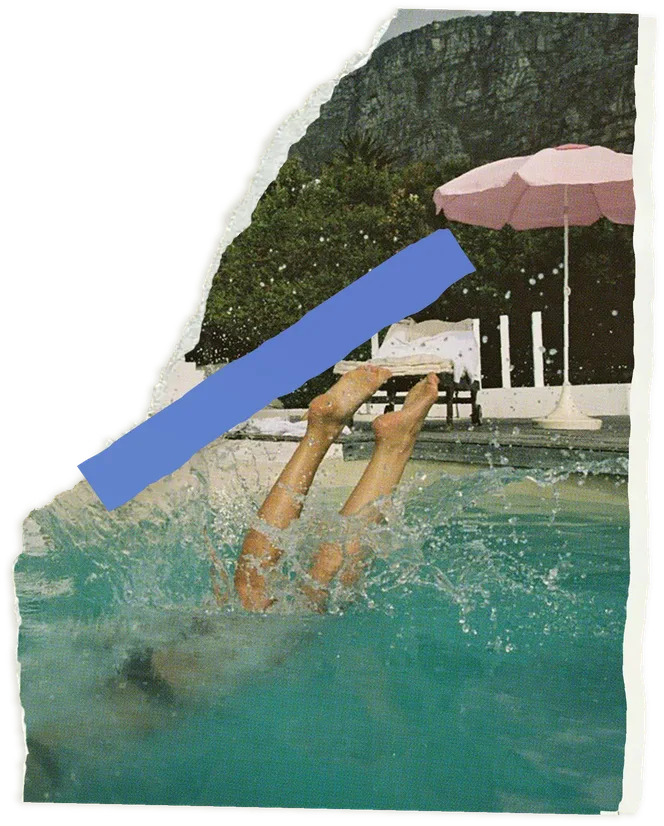

Liz Solms
Born and raised in downtown Philadelphia, Liz Solms writes short fiction and poetry. She has spent much of her adult life in Jamaica, West Indies. She now splits her time between Jamaica and New Orleans. Her husband and daughter come along. Liz is a two-time Pushcart Prize nominee, a finalist for the Sandy Crimmins National Prize for Poetry, the Breakwater Prize in poetry, and a two-time finalist for both Glimmer Train’s New Writer Award and the Letter Review Prize. Liz’s writing has been published in Post Road, Wasafiri, The Village Voice, War Literature & The Arts, Diner Journal, and Reed Magazine, among other publications.
Liz holds an MFA from Bennington College.
Liz’s other life is an
agricultural activist and creative director.
Her debut collection of short stories, Small Hot Rooms, is forthcoming from Serving House Press in November 2026.
Selected Published Work and Reviews
- Last Day on Earth – Reed Magazine
- The Smell of Water – Flash Fiction Magazine
- Jungle Room – Break Water Review
- Small Rooms, Seven Summers – Philadelphia Stories
- Wasafiri Issue 87 – Wasafiri
- WLA Journal Issue 29 – WLA Journal
- Post Road Issue 26 – Post Road Magazine
Events + Appearances
- Small Hot Rooms launch reading Serving House Press · Philadelphia
- Reading and conversation Bennington College · Vermont
- Poetry night Treasure Beach · Jamaica
- Panel: writing place New Orleans Book Festival
- Reading with Philadelphia Stories Philadelphia
No readings on the calendar just now. Liz announces new dates in her zine Ongoing — write to her to subscribe.
Past appearances
- Reading Blue Mountain Project · Jamaica
- Sandy Crimmins Prize finalists’ reading Philadelphia
- Craft workshop Bennington Writing Seminars · Vermont


Contact
To reach Liz and/or subscribe to her zine Ongoing
you can email her here:
Liz.solms.writer@gmail.com
Please note Ongoing is a printed zine only available by mail.
Please provide your physical address.